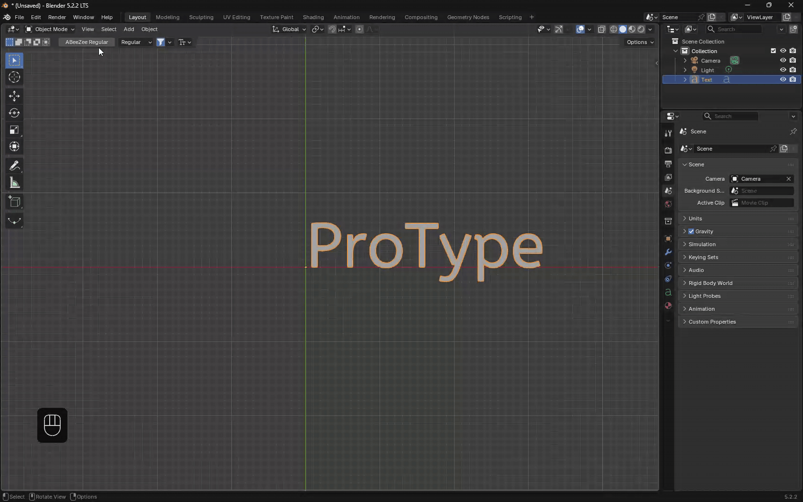
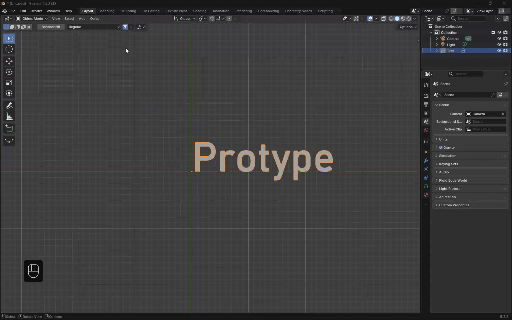
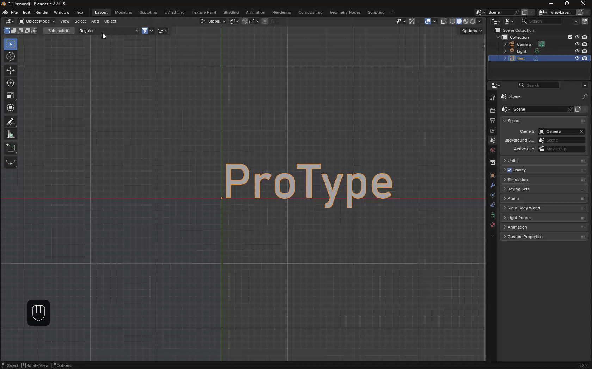
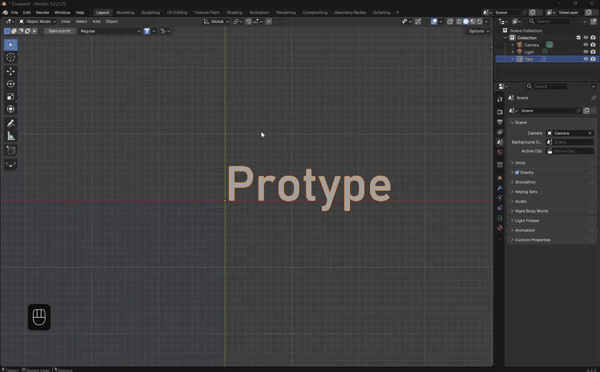

Browse, preview, and apply fonts to 3D Text objects without leaving the 3D Viewport. ProType brings font search, style selection, and practical typography controls into your Blender workflow.
Features
Select a 3D Text object to access the font browser, compare styles, and adjust typography right in the viewport.
01 / BROWSE & PREVIEW
Compare fonts right in your viewport.
Open the font picker from the 3D Viewport header to browse a family-organized list. Each row previews text in its actual typeface, making it easier to compare letterforms before you apply a font.
Controls appear contextually for a selected 3D Text object.
Preview the font name or choose custom sample text in Preferences.
Apply a font to selected text objects without browsing system folders manually.
Browse font families, preview the type, and apply a selection.
02 / SEARCH & FILTER
Go from a broad library to a shortlist.
Search font and family names, then refine results with source tabs and category filters. When browsing Google Fonts, weight filters help narrow those results by weight. Reset filters whenever you want to start over.
Search local, custom-folder, or enabled Google Fonts catalogs.
Filter by sans-serif, serif, display, handwriting, and monospace categories.
Google weight filters are shown only for Google Fonts.

Use search to find a family, then narrow or broaden the results with filters.
03 / SOURCE TABS
Browse by where your fonts come from.
Switch between available font sources in the picker. System and user fonts are discovered from the operating system; custom folders let you include project or studio libraries. Google Fonts can be enabled separately in ProType Preferences.
Choose from All, System, User, Custom, and Google sources as available.
Add folders from Edit > Preferences > Add-ons > ProType.
Google Fonts require Blender online access to download new fonts.

Choose a source and refine the list with available filters.
04 / FAMILY STYLES
Choose a style separately from its family.
The font button identifies the family, while the adjacent style dropdown lets you choose an available variant. For variable fonts with named instances, ProType creates cached static font files so Blender can load the selected style.
See available styles for the active text font family.
Variable-font named instances can be selected as distinct styles.
Generated static instances are cached in Blender's user data folder.

Select a style from the family dropdown next to the font picker.
05 / QUICK TYPOGRAPHY
Make common text edits without leaving the viewport.
The typography popover puts frequently used text and geometry controls close to the selected object. Edit casing and size, adjust spacing and alignment, and continue to extrusion, bevel, and other supported curve settings.
Change text case and size.
Adjust character, word, and line spacing and text alignment.
Access extrusion, bevel, and other geometry controls.
Text, layout, and geometry settings are grouped in a viewport popover.
06 / SPECIMEN TOOLTIP
Take a closer look before you commit.
Hover over a font row to open a larger specimen preview. Configure whether the tooltip appears by default and set its sample text independently from the font-list preview.
Preview a larger sample in the typeface you're inspecting.
Set a dedicated specimen phrase in Add-on Preferences.
Keep the tooltip off when you prefer a simpler browsing view.

Inspect a font with the hover preview and configure its sample in Preferences.
Use your font library, your way.
ProType works with fonts already available on your computer and can include additional folders. Online fonts are optional; the local font workflow does not require internet access.
System and user font discovery
ProType discovers fonts from the operating system's standard locations. Supported discovery paths vary by platform and installed font setup.
Custom project and studio folders
Add one or more directories in ProType Add-on Preferences to include fonts used by a project or shared studio library.
Optional Google Fonts access
Enable Google Fonts in ProType Preferences and allow online access in Blender's System Preferences to discover and download online fonts. Downloaded files are cached locally for reuse.
Preview and tooltip preferences
Choose whether font rows show the font name or custom sample text. The hover specimen has its own enable setting and sample text.
Made for Blender text workflows.
ProType adds viewport controls for Blender 3D Text objects. Font availability and licensing remain tied to the fonts installed or downloaded on your system.
BlenderBlender 4.2 or newer.
Font sourcesSystem, user, custom-folder, and optional Google Fonts catalog.
Network accessNot needed for local fonts. Required to download new Google Fonts.